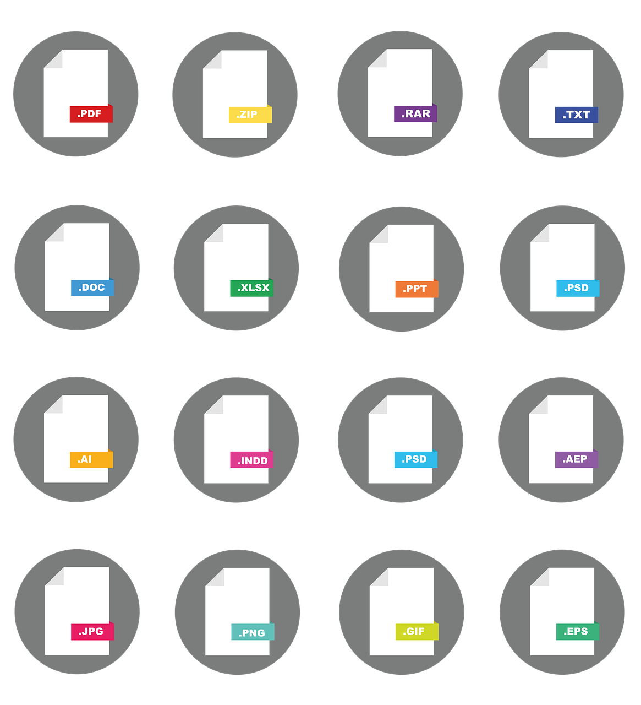

Załączniki w e-mailach - odbieranie
- Otwarcie wiadomości w aplikacji do obsługi poczty elektronicznej (komputer, mobile, web)
- Zapoznanie się z główną treścią wiadomości
- Pobranie i zapisanie załączników
- Rozpakowanie załączników (ZIP, RAR - wymagane oprogramowanie)
- Otwarcie załączników (wymagane oprogramowanie dla danego typu załącznika)
- Zapoznanie się z treścią załączników
6 czynności
Załączniki w e-mailach - wysyłanie
- Utworzenie nowej wiadomości w aplikacji do obsługi poczty elektronicznej (komputer, mobile, web)
- Napisanie głównej treści wiadomości
- Utworzenie i zredagowanie treści załączników (wymagane oprogramowanie dla danego typu załącznika)
- Zapisanie załączników
- Spakowanie załączników (ZIP, RAR - wymagane oprogramowanie)
- Dodanie załączników do wiadomości
- Wysłanie wiadomości
7 czynności
Do przekazania informacji e-mailem z załącznikami potrzebnych jest aż
13 czynności
Załączniki na stronach internetowych (WWW)
- Zapoznanie się z główną treścią strony internetowej
- Odszukanie i zidentyfikowanie łączy (linków) do załączonych na stronie plików
- Pobranie i zapisanie załączników
- Rozpakowanie załączników (ZIP, RAR - wymagane oprogramowanie)
- Otwarcie załączników (wymagane oprogramowanie dla danego typu załącznika)
- Zapoznanie się z treścią załączników
6 czynności
Problemy z dostępnością załączników
Skany
- Są obrazem tekstu zamiast tekstem
- Nie zawierają warstwy tekstowej
- Nie posiadają zaprogramowanej struktury i kolejności odczytu
- Nie są przeszukiwalne
- Nie są możliwe do wizualnego dostosowania (wielkość czcionki, wysoki kontrast itp.)
- Są niedostępne dla czytników ekranu
- Ich zawartość nie jest indeksowana przez wyszukiwarki (Google itp.)
- Zawarte w nich ewentualne podpisy oraz pieczątki nie mają żadnej wartości poświadczającej ich oryginalność (jest ona równa kserokopii)
Różnorodne formaty załączników
- Nie powstały z myślą o używaniu w internecie
- Wymagają posiadania dodatkowego, dedykowanego, często komercyjnego oprogramowania do ich obsługi
- Na stronach www, wymagają dostępnego opisywania treści prowadzących do nich łączy
- Niektóre otwierają się bezpośrednio w przeglądarkach, inne wymagają ich pobrania i zapisania, co może być dezorientujące
- Zajmują znacznie więcej miejsca niż informacja zapisana w treści emaila / strony www (HTML)
- Muszą być przygotowane w sposób dostępny - zgodnie ze specyfikacją danego formatu
- Aktualizacja jest żmudna i czasochłonna
- Żadne prawo nie nakazuje używania załączników

E-mail bez załączników - odbieranie
- Otwarcie wiadomości w aplikacji do obsługi poczty elektronicznej (komputer, mobile, web)
- Zapoznanie się z główną treścią wiadomości
2 czynności
E-mail bez załączników - wysyłanie
- Utworzenie nowej wiadomości w aplikacji do obsługi poczty elektronicznej (komputer, mobile, web)
- Napisanie głównej treści wiadomości
- Wysłanie wiadomości
3 czynności
Do przekazania informacji e-mailem bez załączników potrzeba tylko
5 czynności
Strony WWW bez załączników
- Zapoznanie się z główną treścią strony internetowej
1 czynność
Nie (nad)używaj załączników
w e-mailach i na stronach www
Jeśli to tylko możliwe
przekazuj informacje w treści głównej
wiadomości e-mail i/lub strony www
nie używając do tego załączników.